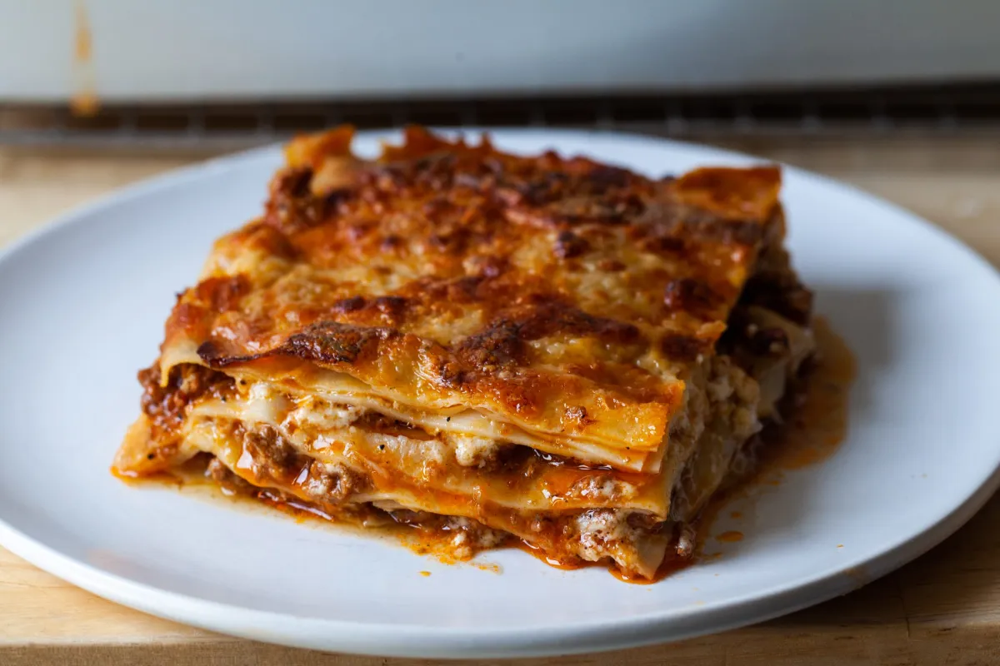

Lasagna

Lasagna Bolognese
Ogres are like lasagna. They have layers. You get the noodles, then the sauce, the cheese, then more noodles. This particular recipe is for a lasagna bolognese, with a...you guessed it...layered, multi-dimensional sauce that will have even the hardest of ogres politely asking for seconds!
- 1 lb ground beef
- 1 lb ground pork
- 1 large onion, finely chopped
- 2 carrots, finely chopped
- 2 celery stalks, finely chopped
- 3 cloves garlic, minced
- 1 cup whole milk
- 1 cup dry white wine
- 1 can (28 oz) crushed tomatoes
- 1/4 cup tomato paste
- 1 bay leaf
- Salt and pepper to taste
- 1/2 cup grated Parmesan cheese
- 12-16 lasagna noodles
- 2 cups shredded mozzarella cheese
- For the béchamel sauce:
- 4 tbsp butter
- 1/4 cup all-purpose flour
- 3 cups whole milk
- Pinch of nutmeg
- Salt and pepper to taste
Steps
- Make the Bolognese Sauce:
- In a large pot, heat a bit of olive oil over medium heat. Add the ground beef and pork, cooking until browned. Remove and set aside.
- In the same pot, add the onion, carrots, celery, and garlic. Sauté until soft, about 5-7 minutes.
- Return the meat to the pot, add the milk, and simmer until mostly evaporated.
- Add the wine, simmering until it reduces by half. Then add the crushed tomatoes, tomato paste, bay leaf, and a pinch of salt and pepper.
- Lower the heat, cover, and let the sauce simmer for 1.5 to 2 hours, stirring occasionally.
- Remove the bay leaf and adjust seasoning to taste.
- Prepare the Béchamel Sauce:
- In a saucepan, melt the butter over medium heat. Stir in the flour and cook for 1-2 minutes until lightly golden.
- Gradually whisk in the milk until smooth. Cook, stirring, until the sauce thickens, about 5 minutes.
- Season with a pinch of nutmeg, salt, and pepper. Remove from heat and set aside.
- Preheat the Oven: Preheat your oven to 375°F (190°C).
- Assemble the Lasagna:
- Spread a thin layer of Bolognese sauce on the bottom of a 9x13 inch baking dish.
- Place a layer of lasagna noodles on top.
- Spread a layer of Bolognese sauce over the noodles, followed by a layer of béchamel sauce, and sprinkle with Parmesan cheese.
- Repeat layers (noodles, Bolognese, béchamel, Parmesan) until you reach the top of the dish, ending with béchamel and a generous sprinkle of mozzarella and Parmesan cheese.
- Bake the Lasagna: Cover the dish with foil and bake for 25 minutes. Remove the foil and bake for an additional 20-25 minutes, until the top is golden and bubbly.
- Let it Rest: Remove from the oven and let the lasagna rest for 10-15 minutes before slicing and serving.
Return Home